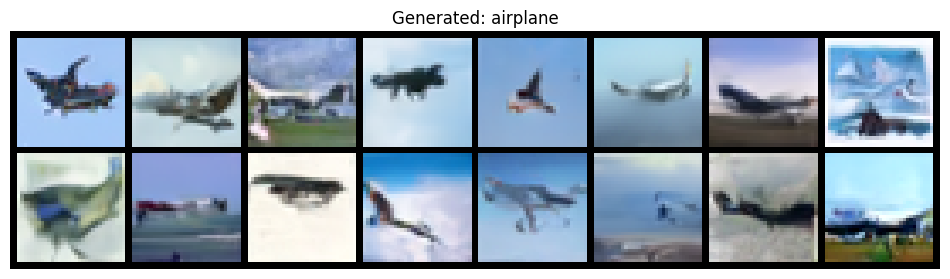
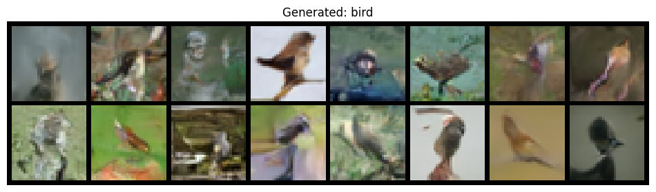
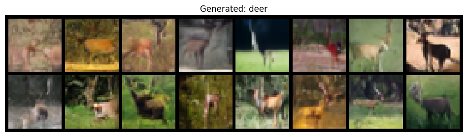
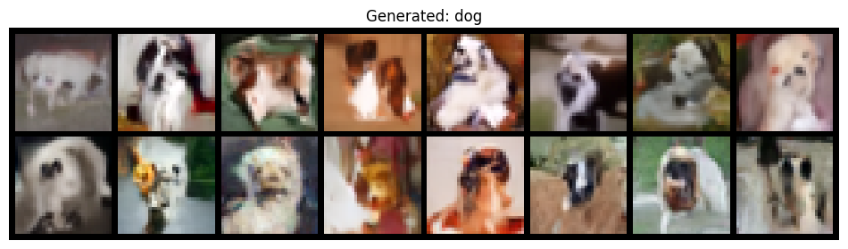
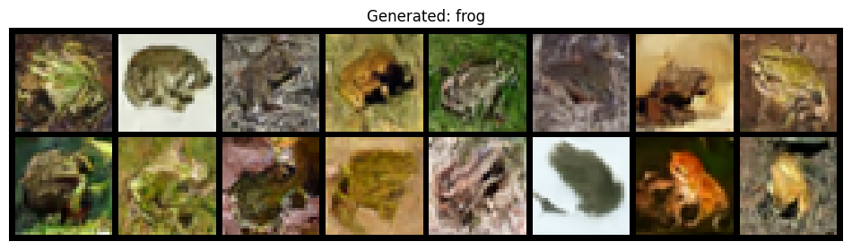
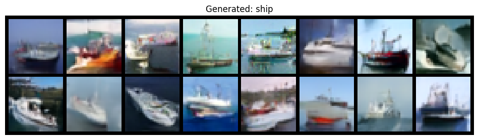

Using device: cudaDiffusion & Flow Matching Part 11: Building an Image Generator
diffusion
flow-matching
generative-models
tutorial
cifar-10
NoteTL;DR
- We build a working image generator from scratch using flow matching on CIFAR-10
- Same techniques power production systems like Stable Diffusion, Flux, and Sora
- Classifier-free guidance (CFG) lets us control what class to generate
- Full code included — run it yourself on Google Colab
From Theory to Practice
In the previous posts, we built up the mathematical foundations of flow matching:
- Part 2: Vector fields and flows
- Part 4: The marginalization trick and CFM loss
- Part 7: Training algorithms
- Part 9: U-Net architecture
Now it’s time to put it all together. We’ll build a conditional image generator that can create CIFAR-10 images of any class — airplanes, cars, cats, dogs, and more.
TipTry it yourself

The complete notebook runs in ~1-2 hours on a free Colab GPU.
Setup
We’ll use a few key libraries:
- PyTorch and torchvision for deep learning and data
- diffusers from Hugging Face for the U-Net architecture (the same library behind Stable Diffusion!)
- torchdiffeq for ODE integration during sampling
Loading CIFAR-10
CIFAR-10 contains 60,000 32×32 color images across 10 classes. We normalize to [-1, 1] — centering around zero helps with stable training.
The U-Net Architecture
We use UNet2DModel from the diffusers library. This is the same architecture that powers Stable Diffusion and other state-of-the-art models.
TipWhy U-Net?
The U-Net’s encoder-decoder structure with skip connections is perfect for image generation:
- Encoder captures global context at low resolutions
- Decoder reconstructs fine details at high resolutions
- Skip connections preserve spatial information that would otherwise be lost
Key features of our model:
- Time conditioning: Sinusoidal embeddings tell the network “where we are” in the flow (\(t \in [0,1]\))
- Class conditioning: Embedding layer tells the network “what to generate” (airplane, cat, etc.)
- Attention layers: Self-attention at lower resolutions for global context
model = UNet2DModel(
sample_size=32, # Image size (32x32 for CIFAR-10)
in_channels=3, # RGB images
out_channels=3, # Output vector field has same shape as input
layers_per_block=2, # ResNet blocks per resolution level
block_out_channels=(64, 128, 256, 256), # Channels at each resolution
down_block_types=(
"DownBlock2D", # 32 -> 16
"DownBlock2D", # 16 -> 8
"AttnDownBlock2D", # 8 -> 4 (with attention)
"DownBlock2D", # 4 -> 2
),
up_block_types=(
"UpBlock2D", # 2 -> 4
"AttnUpBlock2D", # 4 -> 8 (with attention)
"UpBlock2D", # 8 -> 16
"UpBlock2D", # 16 -> 32
),
num_class_embeds=NUM_CLASSES + 1, # +1 for null class (CFG)
)Flow Matching: The Core Idea
Recall from Part 4 that flow matching learns a vector field to transport noise to data. Here’s the intuition:
TipAnalogy: GPS Navigation
Think of flow matching like GPS navigation. You want to get from point A (noise) to point B (image). The network learns the velocity — which direction to move at each moment. Follow the velocity long enough, and you arrive at your destination.
The Gaussian CondOT Path
We use the Gaussian CondOT path — the same formulation from Part 7:
\[x_t = \alpha_t \cdot z + \beta_t \cdot \epsilon \tag{1}\]
where:
- \(z \sim p_{\text{data}}\) is a real image
- \(\epsilon \sim \mathcal{N}(0, I)\) is noise
- \(\alpha_t = t\) and \(\beta_t = 1 - t\) (linear schedule)
This gives us the linear interpolation:
\[x_t = t \cdot z + (1-t) \cdot \epsilon \tag{2}\]

NoteBoundary Conditions
| Time | \(\alpha_t\) | \(\beta_t\) | \(x_t\) |
|---|---|---|---|
| \(t = 0\) | 0 | 1 | \(\epsilon\) (pure noise) |
| \(t = 1\) | 1 | 0 | \(z\) (clean data) |
The path starts at noise and ends at data — exactly what we need for generation!
TipWhy This Path?
This is the optimal transport path — the straight line from noise to data. Compared to Gaussian variance-preserving paths used in DDPM (Part 5):
- Constant vector field: \(u_t = z - \epsilon\) doesn’t change with time
- Straighter trajectories: Fewer ODE steps needed (10-50 vs 1000)
- Same math: The marginalization trick still applies
The conditional vector field is remarkably simple. Taking the derivative of \(x_t = t \cdot z + (1-t) \cdot \epsilon\):
\[u_t(x_t | z) = \frac{d x_t}{dt} = z - \epsilon \tag{3}\]
This is constant in time! The direction from noise to image is simply their difference.
The CFM loss (from Part 4) trains the network to predict this vector field:
\[\mathcal{L}_{\text{CFM}} = \mathbb{E}_{t, z, \epsilon} \left[ \| u_t^\theta(x_t) - (z - \epsilon) \|^2 \right] \tag{4}\]
The implementation is straightforward — sample \(t\), compute \(x_t\), and minimize MSE between predicted and target vector field:
def flow_matching_loss(model, z, class_label, label_dropout=0.1):
"""Compute the Conditional Flow Matching loss."""
batch_size = z.shape[0]
# Sample random time t ~ Uniform[0, 1]
t = torch.rand(batch_size, device=z.device)
# Sample noise ε ~ N(0, I)
eps = torch.randn_like(z)
# Compute x_t = t*z + (1-t)*ε (linear interpolation)
t_expand = t[:, None, None, None]
xt = t_expand * z + (1 - t_expand) * eps
# Target vector field: u_t = z - ε (constant in time!)
target = z - eps
# Apply label dropout for CFG (replace some labels with null class)
dropout_mask = torch.rand(batch_size, device=z.device) < label_dropout
class_label_dropped = torch.where(dropout_mask, NUM_CLASSES, class_label)
# Predict vector field
predicted = model(xt, (t * 1000).long(), class_labels=class_label_dropped).sample
# MSE loss
return F.mse_loss(predicted, target)Classifier-Free Guidance
We want to generate images of a specific class (e.g., “airplane”), not just any random image. Classifier-Free Guidance (CFG) is the standard solution, used in DALL-E, Stable Diffusion, and virtually all modern image generators.
The Key Insight
Recall from Part 8 that for Gaussian paths, there’s a beautiful connection to Bayes’ rule. The conditional score decomposes as:
\[\nabla_x \log p_t(x | y) = \underbrace{\nabla_x \log p_t(x)}_{\text{unconditional}} + \underbrace{\nabla_x \log p_t(y | x)}_{\text{classifier gradient}}\]
This tells us: to generate class \(y\), take the unconditional direction and add the classifier gradient. CFG approximates this without training a separate classifier.
Training: Label Dropout
During training, we randomly drop class labels with probability \(\eta\) (typically 10%). When dropped, we replace with a “null” class token. This teaches one model to do two things:
| Input | Model learns |
|---|---|
| Real label \(y\) | Conditional: \(u_t^\theta(x_t | y)\) |
| Null label \(\emptyset\) | Unconditional: \(u_t^\theta(x_t | \emptyset)\) |
Sampling: Guided Velocity
At inference, we blend both predictions:
\[\tilde{u}_t = u_t^\theta(x_t | \emptyset) + w \cdot \bigl(u_t^\theta(x_t | y) - u_t^\theta(x_t | \emptyset)\bigr) \tag{5}\]
Rearranging: \(\tilde{u}_t = (1-w) \cdot u_t^\theta(x_t | \emptyset) + w \cdot u_t^\theta(x_t | y)\)
The guidance scale \(w\) controls conditioning strength:
| \(w\) | Effect |
|---|---|
| 0 | Pure unconditional (ignores class) |
| 1 | Standard conditional |
| 2-4 | Typical range — sharper, more on-topic |
| >8 | Oversaturated, artifacts |
WarningCommon Pitfall
High guidance (\(w > 8\)) amplifies the class signal so much that images become oversaturated with artifacts. Start with \(w = 2\) and adjust.
class CFGVectorField(nn.Module):
"""Applies classifier-free guidance during sampling."""
def __init__(self, model, guidance_scale=2.0):
super().__init__()
self.model = model
self.guidance_scale = guidance_scale
self.class_label = None # Set before sampling
def forward(self, t, x):
"""Compute guided vector field for ODE solver."""
batch_size = x.shape[0]
timestep = int(t.item() * 1000)
timesteps = torch.full((batch_size,), timestep, device=x.device, dtype=torch.long)
# Unconditional prediction (null class)
null_class = torch.full((batch_size,), NUM_CLASSES, device=x.device, dtype=torch.long)
u_uncond = self.model(x, timesteps, class_labels=null_class).sample
# Conditional prediction
u_cond = self.model(x, timesteps, class_labels=self.class_label).sample
# CFG formula: u_guided = u_uncond + w * (u_cond - u_uncond)
return u_uncond + self.guidance_scale * (u_cond - u_uncond)Training
The training loop is straightforward:
- Sample a batch of images \(z\) and labels \(y\)
- Compute the flow matching loss (4)
- Backpropagate and update weights
- Repeat
optimizer = torch.optim.AdamW(model.parameters(), lr=2e-4)
for epoch in range(50):
for z, y in train_loader:
z, y = z.to(device), y.to(device)
optimizer.zero_grad()
loss = flow_matching_loss(model, z, y, label_dropout=0.1)
loss.backward()
torch.nn.utils.clip_grad_norm_(model.parameters(), 1.0)
optimizer.step()Hyperparameters
| Parameter | Value | Why? |
|---|---|---|
| Batch size | 128 | Fits on Colab GPU, provides stable gradients |
| Learning rate | 2e-4 | Standard for diffusion models |
| Label dropout | 0.1 | 10% enables CFG without hurting conditional quality |
| Epochs | 50+ | More is better; 100+ for publication-quality |
Sampling
To generate images, we solve the ODE (recall Part 2 — flows are generated by integrating vector fields):
\[\frac{dx_t}{dt} = u_t^\theta(x_t | y) \tag{6}\]
Starting from noise \(\epsilon\) at \(t=0\) and integrating to \(t=1\):
- Sample initial noise \(\epsilon \sim \mathcal{N}(0, I)\)
- Use
torchdiffeq.odeintto solve the ODE with the CFG-guided vector field - The final state at \(t=1\) is our generated image
@torch.no_grad()
def sample(model, num_samples, class_label, guidance_scale=2.0, num_steps=50):
"""Generate samples using ODE integration."""
model.eval()
# Wrap model for CFG
vector_field = CFGVectorField(model, guidance_scale)
vector_field.class_label = torch.full(
(num_samples,), class_label, device=device, dtype=torch.long
)
# Start from noise at t=0
x = torch.randn(num_samples, 3, 32, 32, device=device)
# Integrate ODE from t=0 to t=1
t_span = torch.linspace(0, 1, num_steps, device=device)
trajectory = odeint(vector_field, x, t_span, method='euler')
return trajectory[-1].clamp(-1, 1) # Final image at t=1Results
After training, we can generate images for any CIFAR-10 class:
Generating samples for each class...









Effect of Guidance Scale
Higher guidance scale \(w\) means stronger class conditioning — but too high leads to artifacts:
Effect of guidance scale on 'airplane' class:
NoteSummary
We built a complete conditional image generator using flow matching:
- U-Net architecture from
diffuserswith time and class conditioning - Gaussian CondOT path: \(x_t = t \cdot z + (1-t) \cdot \epsilon\) with constant vector field \(u_t = z - \epsilon\) (2, 3)
- CFM loss: Train to predict the vector field (4)
- Classifier-free guidance: Blend conditional and unconditional predictions (5)
- ODE sampling: Integrate from noise (\(t=0\)) to image (\(t=1\)) via 6
The same techniques — with larger models and datasets — power Stable Diffusion 3, Flux, DALL-E 3, and Sora. You now understand the core mechanics behind these systems!
What’s Next?
This concludes our diffusion & flow matching series! Here are some extensions to explore:
- Diffusion Transformers (DiT): Replace U-Net with a transformer (Part 10)
- Latent diffusion: Work in compressed latent space for higher resolution
- Text conditioning: Replace class labels with text embeddings (CLIP)
- Better samplers: DPM-Solver, Euler ancestral, etc.
References
Lipman, Y., Chen, R. T., Ben-Hamu, H., Nickel, M., & Le, M. (2022). Flow Matching for Generative Modeling. ICLR 2023.
Ho, J., & Salimans, T. (2022). Classifier-Free Diffusion Guidance. NeurIPS 2022 Workshop.
Tong, A., et al. (2024). Flow Matching Guide and Code. Meta AI.